UX/UI дизайн
UX термины
UX-дизайн — это комплексный подход, который опирается на потребности и опыт пользователей, чтобы создавать продукты, которыми люди действительно хотят и могут пользоваться.
Интерфейс (Interface)
Интерфейс — это визуальное представление продукта, с которым взаимодействует пользователь. Другими словами, интерфейс — это все элементы, с помощью которых пользователь взаимодействует с продуктом.
Хороший интерфейс:
- Соответствует ожиданиям и потребностям пользователей
- Помогает им эффективно достигать своих целей
- Имеет логичную структуру и навигацию
- Использует понятные визуальные и интерактивные элементы
- Обеспечивает доступность и отзывчивость на разных устройствах
Интерфейсом можно назвать все что угодно. Например, дверная ручка — интерфейс для взаимодействия с дверью, кнопка — для взаимодействия с функцией устройства или приложения, язык — для взаимодействия между людьми.
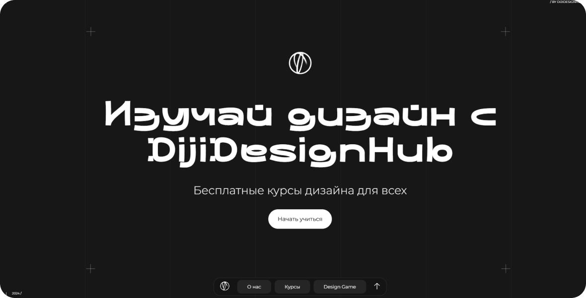
Сайт — интерфейс взаимодействия с компьютером
Варфрейм (Wireframe)
Варфрейм — это простой, схематичный макет интерфейса, который показывает основную структуру и расположение элементов на странице или экране. Черно-белый или монохромный набросок будущего пользовательского интерфейса.
Вайфреймы используются для:
- Планирования структуры и взаимодействия интерфейса
- Обсуждения и согласования концепций с заказчиками и командой
- Тестирования удобства использования до детальной разработки
- Коммуникации между дизайнерами, разработчиками и менеджерами
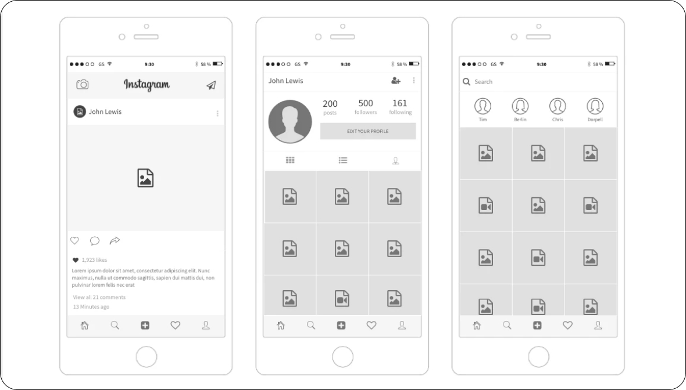
Скриншот сайта MockFlow
Прототип (Prototype)
Прототип — интерактивная модель будущего продукта, которая позволяет экспериментировать, тестировать идеи и совершенствовать пользовательский опыт еще до финальной реализации.
Прототипы используются на разных этапах разработки продукта:
- На ранних этапах — для быстрого тестирования концепций
- На более поздних этапах — для детальной проверки интерфейса и взаимодействий
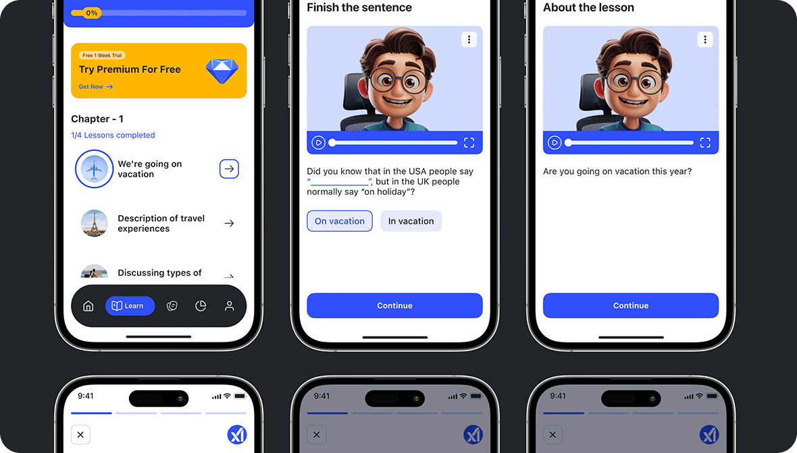
Изображение: Mohamed MonGe / Behance
Информационная архитектура (Information Architecture, IA, ИА)
Информационная архитектура — структура и организация информации в продукте или сервисе для облегчения навигации и поиска. Простыми словами, это то, как контент и функции продукта организованы и представлены пользователям.
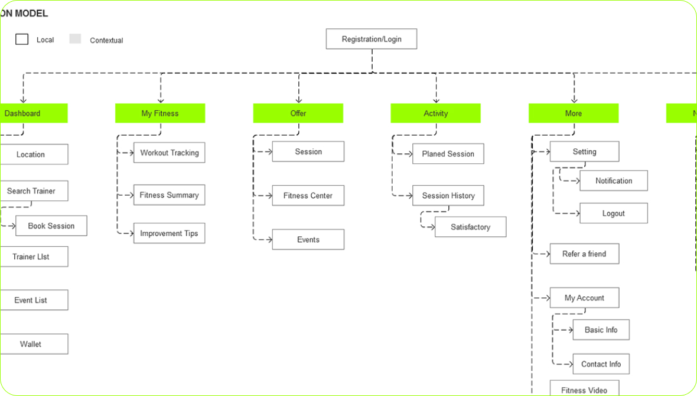
Изображение: Vinayag4u ❤ / Behance
Болевые точки, или боль пользователя (Pain Point)
Боль пользователя — проблемы, трудности которые испытывают пользователи при взаимодействии с продуктом или услугой. Те моменты, которые вызывают у пользователей неудобство, раздражение или разочарование.
Выявление и устранение болевых точек — важная задача в UX-дизайне. Это помогает сделать продукт более удобным, интуитивным и "безболезненным" для пользователей.
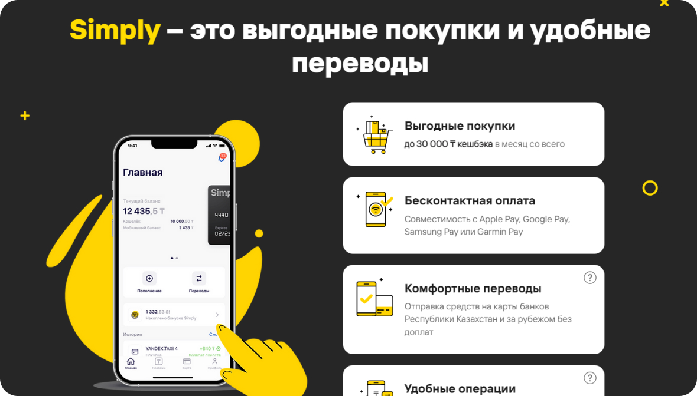
Скриншот сайта Simply
Например, в интернет-банке болевой точкой может быть сложная навигация, из-за которой пользователям трудно находить нужные функции.
Одним из первопроходцев в решении проблемы сложной навигации в банковских приложениях был банк Simply.
Simply отказался от традиционного "банковского" дизайна с множеством меню и опций. Вместо этого они создали очень простой и понятный интерфейс с акцентом на основные задачи пользователей.
Айтрекинг (Eye-tracking)
Айтрекинг — технология, которая позволяет отслеживать движения и фокус взгляда человека. Айтрекинг помогает понять, на что именно смотрит человек, когда он взаимодействует с интерфейсом, изображением или любым другим объектом.
Айтрекинг используется в различных областях, например:
- UX-дизайн — для оценки юзабилити и эффективности интерфейсов
- Маркетинг — для анализа эффективности рекламных и информационных материалов
- Психология и нейробиология — для исследования когнитивных процессов.
- Обучение и тренинги — для оценки вовлеченности и внимания
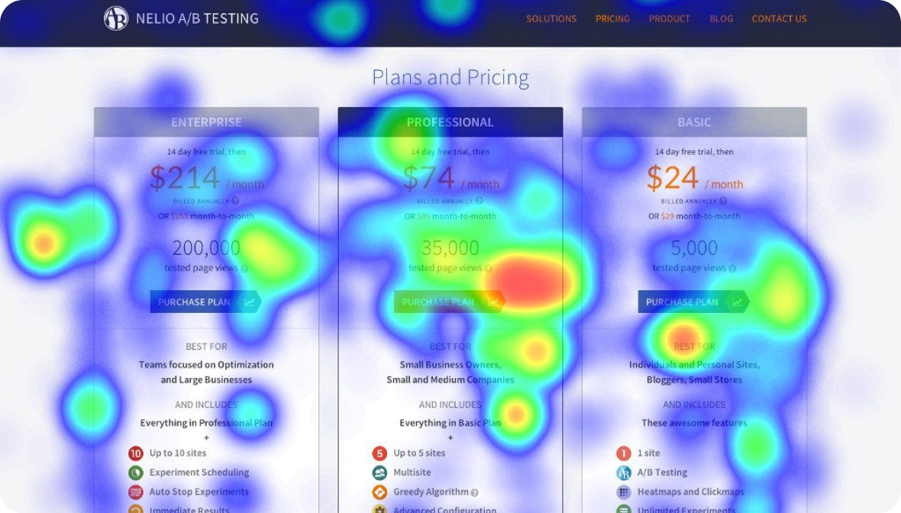
Изображение: Traffink
A/B-тестирование
A/B-тестирование — метод тестирования различных вариантов веб-страницы, мобильного приложения или другого продукта с целью определения, какой из них работает лучше. A/B-тестирование — это сравнение двух версий одного и того же элемента, чтобы понять, какой из них приводит к лучшим результатам.
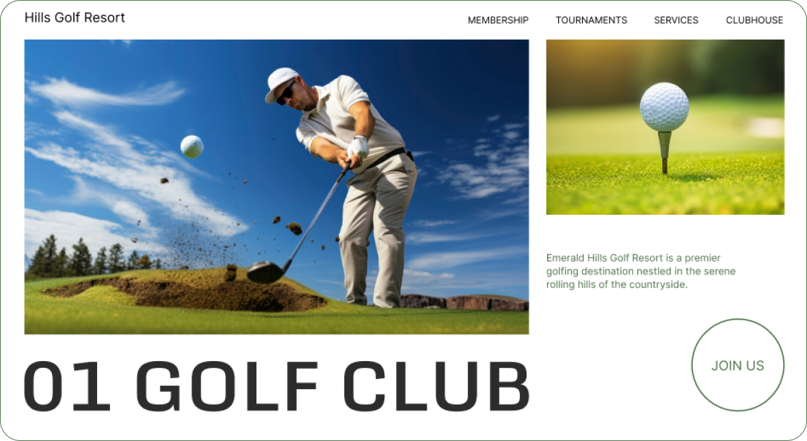
Версия А
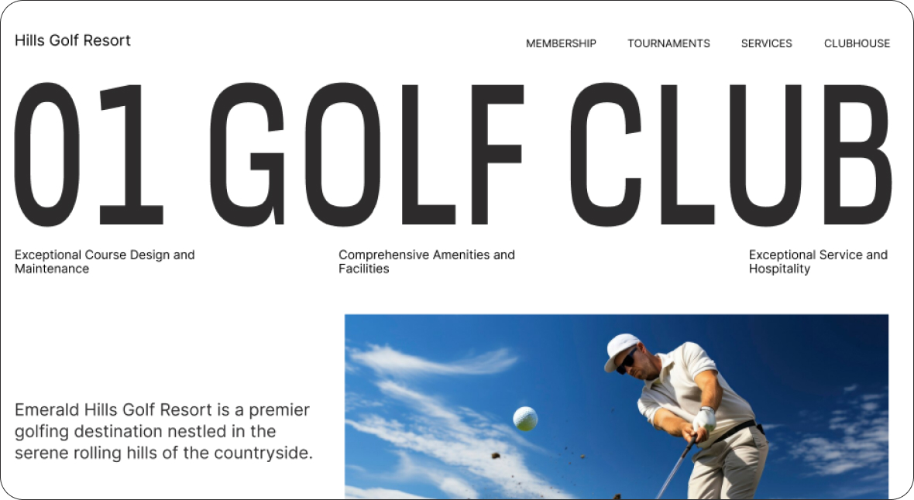
Версия Б
Бета-запуск
Бета-запуск — то промежуточный этап между разработкой и полноценным релизом продукта. Он позволяет командам получить ценную обратную связь от реальных пользователей, отладить и улучшить свое предложение, прежде чем представить его широкой аудитории.
Шкала загрузки, прогресс-бар
(Progress bar)
Прогресс-бар — элемент интерфейса, который показывает пользователю загрузку какого-либо процесса.
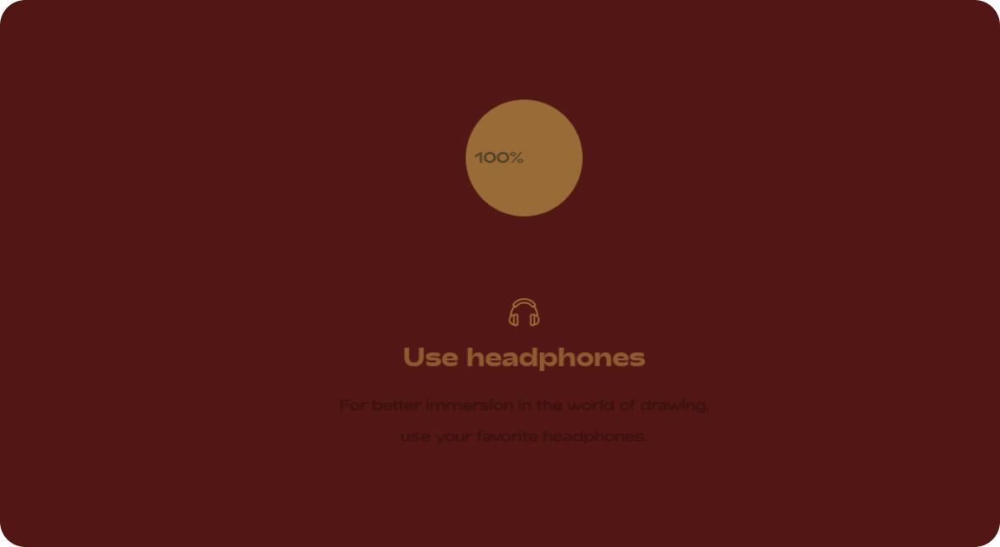
Скриншот сайта Next Level Fairs
Пагинация (Pagination) и прокрутка, бесконечный скролл (Infinite scroll)
Пагинация и прокрутка — два разных подхода к отображению контента на веб-странице.
Пагинация (Pagination)
Пагинация — это метод разбивки контента на страницы, которые пользователи могут просматривать по очереди. Это означает, что, вместо того чтобы загружать всю информацию сразу, данные разбиваются на отдельные части, каждая из которых доступна на своей странице.
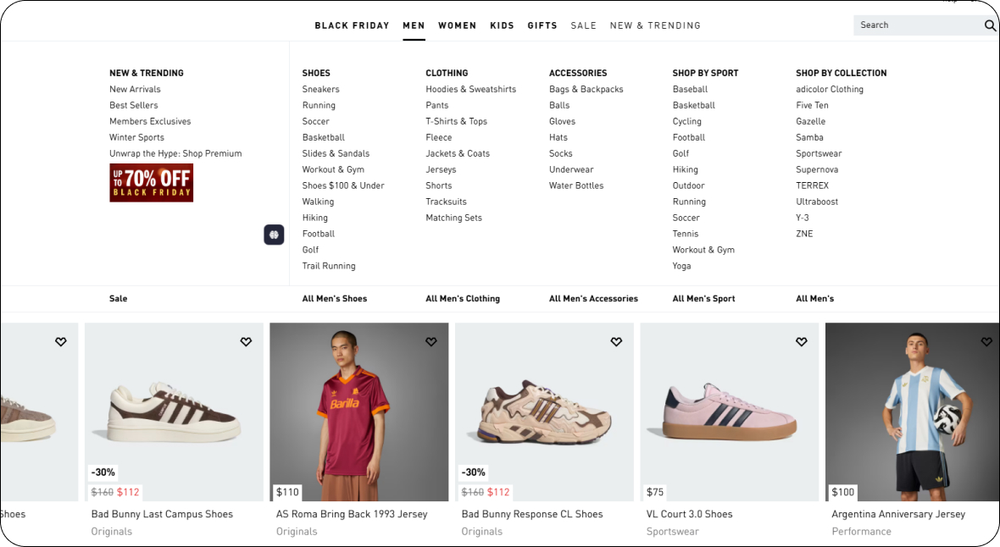
Скриншот сайта Adidas
Списки продуктов, разделенные на страницы, позволяют пользователям легко пролистывать и находить нужные товары.
Бесконечный скролл (Infinite Scroll)
Бесконечный скролл — это технология, которая позволяет пользователям прокручивать вниз по странице, и по мере скроллинга новые элементы автоматически загружаются и добавляются в представление. Это создает иллюзию «бесконечного» контента.
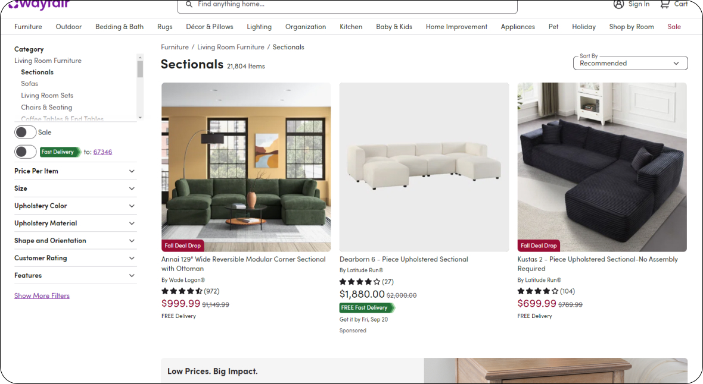
Скриншот сайта Wayfair
Интернет-магазины с большим ассортиментом товаров часто используют бесконечный скролл, чтобы упростить навигацию и поиск продуктов.
Обратная связь (Feedback)
Обратная связь — свойство системы, когда она даёт какой-либо ответ на действия пользователя.
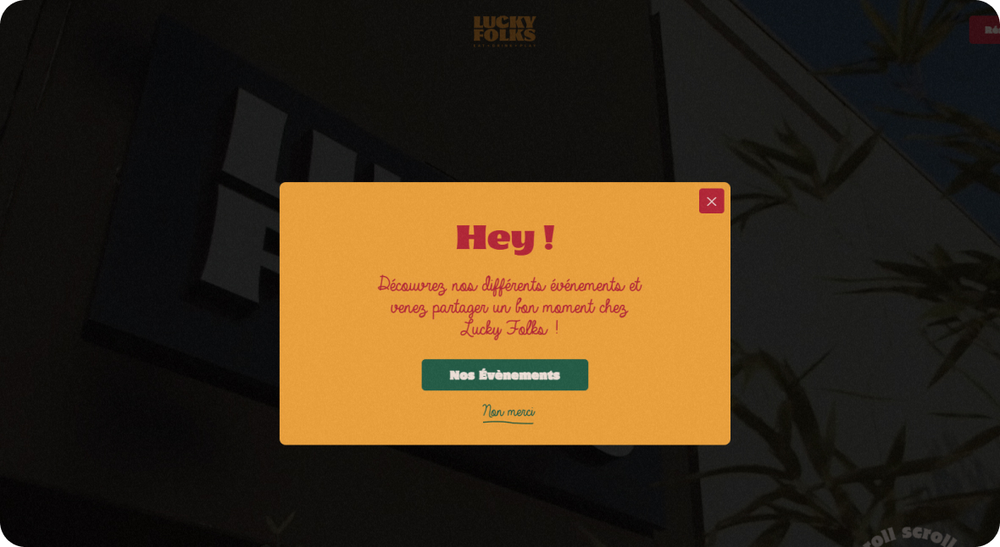
Скриншот сайта Lucky Folks
При наведении курсора на кнопку срабатывает анимация, чтобы показать пользователю, что на неё можно кликнуть.
Доступность (Accessibility)
Доступность — войство дизайна интерфейса, которое определяет, насколько удобен и понятен ваш продукт для использования различными людьми, включая тех, у кого есть физические, сенсорные или когнитивные ограничения.
Например, незрячий пользователь не может самостоятельно просматривать картинки на сайте. В таком случае для обеспечения доступности необходимо добавить текстовые описания изображений, которые программа экранного чтения сможет озвучить для этого пользователя.
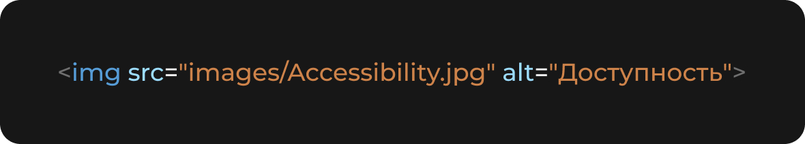
Персоны, персонажи (User personas)
Персоны — обобщенные портреты типичных пользователей твоего продукта или услуги. Они помогают лучше понять, кто твои целевые клиенты и какие у них потребности.
Персоны — это не реальные люди, а скорее вымышленные архетипы, основанные на исследованиях, опросах и наблюдениях за реальными пользователями.
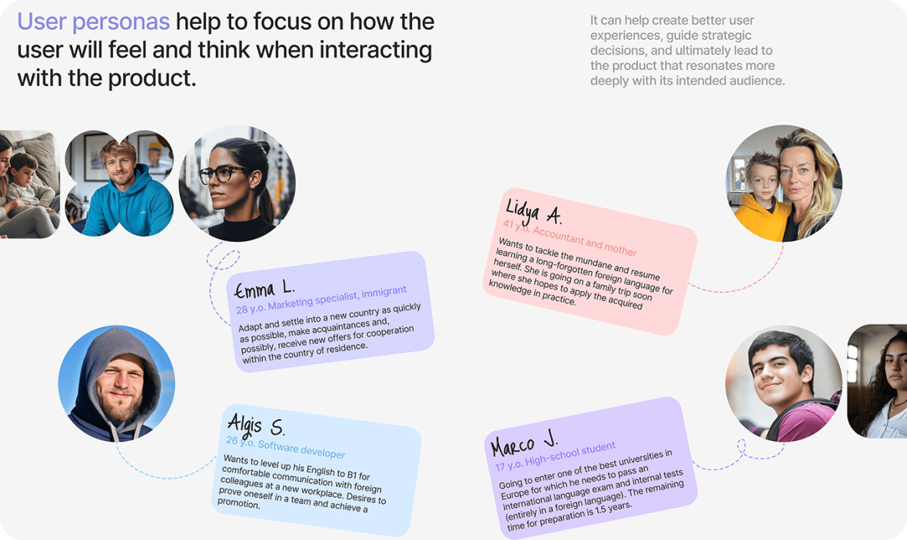
Изображение: Sofia Afanaseva / Behance
Примеры заданий для практики
Создание персонажей
Разработай 2-3 персонажа для вымышленного продукта. Определи их возраст, пол, профессиональную деятельность, интересы и цели. Напиши сценарии, в которых твои персонажи используют продукт, и опиши, с какими проблемами они могут столкнуться.
Пагинация и бесконечный скролл
Создай прототип страницы с обеими системами навигации. Отобрази визуально, как пользователи будут взаимодействовать с контентом. Запиши, когда лучше использовать каждую из систем.
Болевые точки
Выбери два конкурирующих продукта в одной области (например, приложения для доставки еды). Проанализируй их интерфейсы и выдели 3-4 болевых точки у каждого. Обсуди, как их можно улучшить.